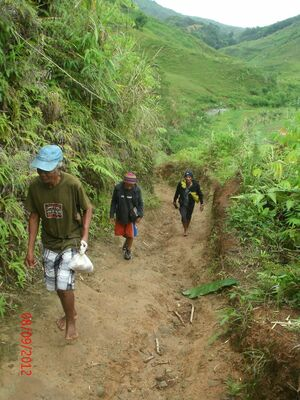
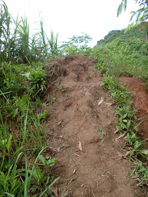

takereg  
/takɔdɔg/
v_rt.
“ascend”
vi.
for a person or animal (egtakereg, migtakereg/intakereg, takereg, agent, eg><ø-) to climb a slope or a mountain (egtakerehen, intakereg/migtakereg/pigtakereg, takereha, location, eg><en-) (egtakerehan, intakerehan/migtakerehan/pigtakerehan, takerehi, location, eg><an-)
Naapunan key ka egpatakereg te Miulayan su mananey ka duma ney ne malitan.
It took us alsmost a day to climb Miulayan (mountain) because our fellowwomen walked slowly.
Hendei ka egtakerehan niyu?
Where you climbing to?
Eng. ascend a slope; go up a slope; climb a slope
Tag. pumaitaás; tumaás; pumailangláng
Ceb. tungas
OCM: Locomotion (481)
DDP: Mountain (1.2.1.1)
Online dict status: -
Usage level: M
adj.
(takerehen, -en) upward-sloping (of land)
Eng. upward-sloping; sloping upwards; ascending (of a slope)
Tag. pumaitaás; tumaás; pumailangláng
Ceb. tungas
OCM: Ethnogeography (823)
DDP: Mountain (1.2.1.1)
Online dict status: -
Usage level: M
Updated by: RJH,AAA,TME,NJK,QDL,NJK,QDL,RAA
Last updated: 19/Nov/2009
"egpatakerehen" in healthbook "Eg-ay-ayaran ta ka me ngipen ta"
This page last updated: 03-Jan-2020
Copyright © 2009-2014, Matigsalug Language Christian Association, Inc